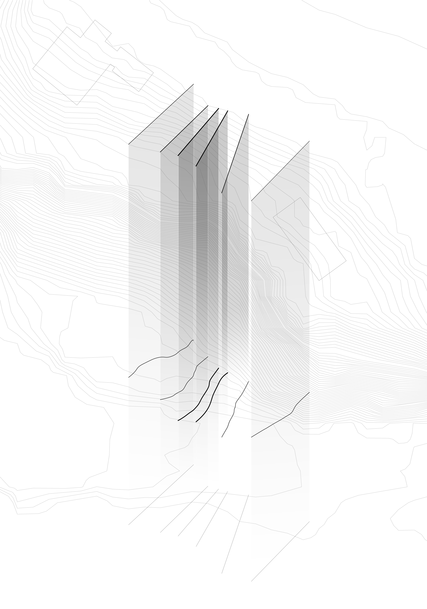
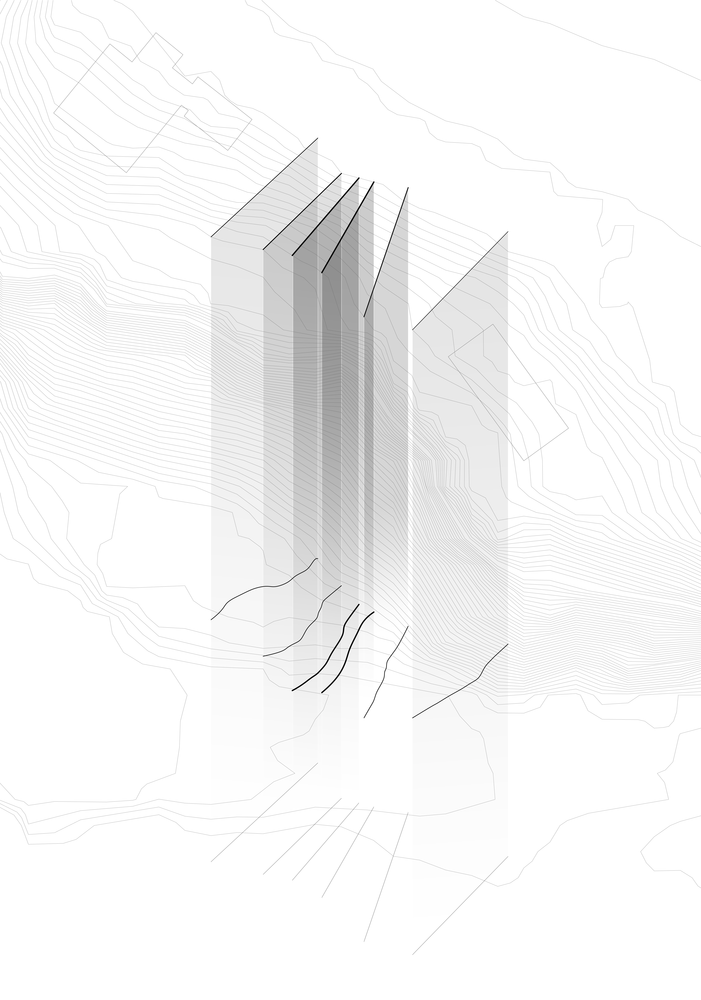

SEWING LAND
The conceptual site model embodies the natural gorge and manmade bridge prominent on the site. The bridge
connects
the two sides of the gap carved away and split by the natural formation of the gorge and merges into the
existing
street grids. The threads in the conceptual model act as the bridge and manmade interventions that sew the gap
of
two sides closer and alternate the landscape. Different types of papers with varying ingredients and
manufacturing
finishes represent the layers of shale lithification under pressure and sedimentation. The threads were soaked
in
ink and dried and then water is applied to dissolve the ink along punctuations left on paper.